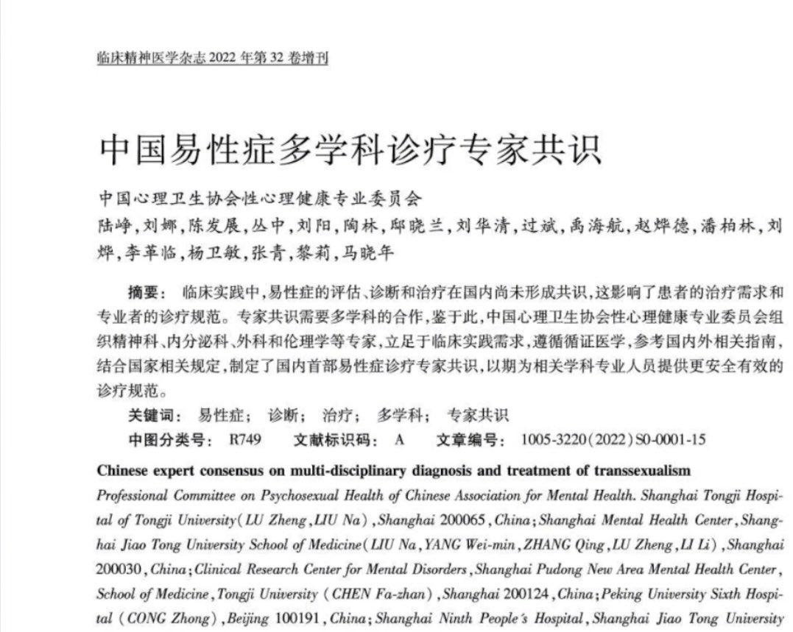

我认为中国在这方面得益于三不管地带，就如楼上所说。卫健委的几条gaht药物指导和性别肯定手术规范等文件其实来来回回就那几个人，起草的时候都没政治介入和考虑。就是几波人凑一起写的一共识，是否被政治官员注意到都难说。国内就是这样一个很尴尬的地带，对于美国以及其他一些发达国家lgbtq＋性少数权益是一个社会热门话题和政治参选内容。当然川普大手肯定干扰不到apa医学者。但临床参合一脚太正常了，在未成年和成年跨性别的用药与性别肯定方案早就脱离了伦理讨论范围，已经被各派拿来当成政治炒作东西。一党执政也不是一点好处都没有。
国内根本掀不起lgbtqia＋权益讨论话题，审查和群体根本就不允许。很多同性恋尤其男同性恋可能都因为融入生活太平常化了没意识到自己权益是有被歧视。国内各方面都是政治上右倾，一党建制就这样了。这就是国内国外核心差异点了，国内在此方面医学的高地还是属于医生们。政治上注意不到也不可能注意到并对此反应。于是国内就成了政治上和社会环境不提及，医学上就是专业人士之间的事情了。两者相互错开，于是就能看到这个神奇的现象。医生们把整个需要医学干预的都做到近乎完美了，不论开药还是手术。唯一就是这个没有纳入必修内容，可以说就是跨爱好者。普通医生不想参与给自己添麻烦毕竟不是必须要学习的东西，然后就是该死的免责了。这点我只能说医生很可怜，虽然政治没有关注跨的事情但是他关注了医学呀。于是首诊责任制和各种问责东西就出来了，只能迫不得已加上未成年需亲属同意，注意其实亲属也可以也算留了个后门。然后手术强制要求监护人同意。我觉得在这个事情上要分开来看，国内社会和政治和（跨）医学其实分开的互不交错。社会上没人讨论lgbt权益问题并且许多人存在歧视现象，政治上严防小学初中心理和性教育科普和讲述此类内容，医学上不受外界关注几个跨爱好者搞啥都没啥政治和社会干预。潘柏林又不是内分泌和专业手术相关。欧美就不太一样了，社会上会讨论lgbt话题，政治上会拿这个作为竞选内容，自然医学上受到了社会和政治的干预与阻力。之前看过一个文章，几十年前美国一位医生未退休的时候医院都还是非常开明的开具garh药物，在当时已经有许多其他需求的患者如生长发育已经长久使用并且证明是在合适的负担范围内，而退休的时候变得越来越保守。
随着经济开始走向下行，全球可能都会掀起一股右倾浪潮吧
国内根本掀不起lgbtqia＋权益讨论话题，审查和群体根本就不允许。很多同性恋尤其男同性恋可能都因为融入生活太平常化了没意识到自己权益是有被歧视。国内各方面都是政治上右倾，一党建制就这样了。这就是国内国外核心差异点了，国内在此方面医学的高地还是属于医生们。政治上注意不到也不可能注意到并对此反应。于是国内就成了政治上和社会环境不提及，医学上就是专业人士之间的事情了。两者相互错开，于是就能看到这个神奇的现象。医生们把整个需要医学干预的都做到近乎完美了，不论开药还是手术。唯一就是这个没有纳入必修内容，可以说就是跨爱好者。普通医生不想参与给自己添麻烦毕竟不是必须要学习的东西，然后就是该死的免责了。这点我只能说医生很可怜，虽然政治没有关注跨的事情但是他关注了医学呀。于是首诊责任制和各种问责东西就出来了，只能迫不得已加上未成年需亲属同意，注意其实亲属也可以也算留了个后门。然后手术强制要求监护人同意。我觉得在这个事情上要分开来看，国内社会和政治和（跨）医学其实分开的互不交错。社会上没人讨论lgbt权益问题并且许多人存在歧视现象，政治上严防小学初中心理和性教育科普和讲述此类内容，医学上不受外界关注几个跨爱好者搞啥都没啥政治和社会干预。潘柏林又不是内分泌和专业手术相关。欧美就不太一样了，社会上会讨论lgbt话题，政治上会拿这个作为竞选内容，自然医学上受到了社会和政治的干预与阻力。之前看过一个文章，几十年前美国一位医生未退休的时候医院都还是非常开明的开具garh药物，在当时已经有许多其他需求的患者如生长发育已经长久使用并且证明是在合适的负担范围内，而退休的时候变得越来越保守。
随着经济开始走向下行，全球可能都会掀起一股右倾浪潮吧
